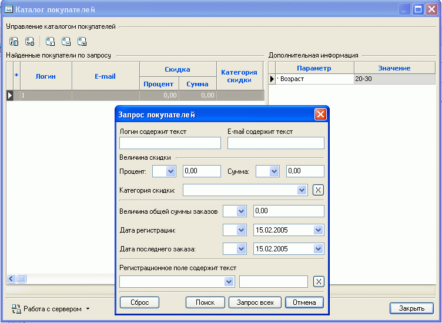
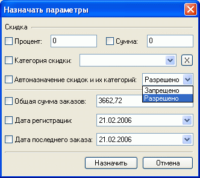
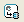
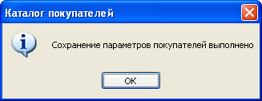

Все сведения о покупателях (зарегистрированных пользователях) хранятся на сервере. Программа Melbis Shop вызовом пункта меню "Заказы и покупатели - Каталог покупателей" при наличии связи с сервером позволяет:


Задавая покупателю персональную скидку или процент, следует иметь в виду, что для этих покупателей общие накопительные скидки применяться не будут .
Также следует учитывать, что в случае применения правил автоназначения скидок и их категорий назначенные покупателю процент или категория скидки будут корректироваться в соответсвии с этими правилами автоназначения. Если этого делать не нужно, следует запретить автоназначение скидок и их категорий.
После того, как параметры выбранных покупателей были изменены или покупатели были помечены для удаления, необходимо передать эти изменения на сервер, для чего служит кнопка

в окне каталога покупателей. Об успешном выполнении передачи данных на сервер свидетельствует появление сообщения:
